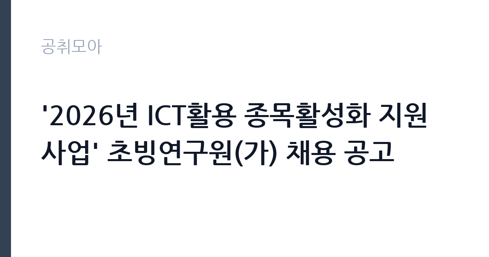

[공공기관] '2026년 ICT활용 종목활성화 지원 사업' 초빙연구원(가) 채용 공고
서울올림픽기념국민체육진흥공단 · 서울 · 마감 2026-11-03 (D-15) · 출처 잡알리오

한눈에 보는 모집 조건
| 기관 | 서울올림픽기념국민체육진흥공단 |
|---|---|
| 공고명 | '2026년 ICT활용 종목활성화 지원 사업' 초빙연구원(가) 채용 공고 |
| 고용형태 | 기간제 |
| 근무지 | 서울 |
| 게시일 | 2026-10-20 |
| 마감일 | 2026-11-03 (D-15) |
지원자격, 이렇게 읽으세요
- 공공기관 채용공시
- 세부 조건은 원문 공고문 확인
자격은 공통 요건과 필수 요건으로 나뉩니다. 공통 요건은 채용공고일 기준 만 60세 미만, 공단 인사규정 제20조 임용결격사유에 해당하지 않는 사람, 채용예정일 즉시 근무가 가능한 사람입니다. 필수 요건은 두 갈래입니다. 체육학 관련 박사학위 소지자 또는 취득 예정자, 혹은 체육학 관련 석사학위를 가진 사람으로 경력 4년 이상인 경우입니다. 여기서 중요한 단서가 붙습니다. 경력은 연구기관이나 대학에서 공동연구자, 연구보조원, 조교 등으로 수행한 업무를 말하며, 학사학위 취득 이후 경력만 인정됩니다. 박사과정 기간과 다른 경력이 겹치면 본인에게 유리한 쪽 하나만 인정되고, 15일 이상 근무한 기간을 1개월로 계산합니다. 증빙서류를 내지 않은 경력은 아예 인정되지 않으므로, 경력기술서와 증명서를 1대1로 맞춰야 합니다.
이 공고의 포인트
이 자리의 핵심은 연구직이라는 점입니다. 공단의 일반 행정직이 아니라 특정 사업을 전담하는 초빙연구원으로, 계약 기간이 정해진 기간제 신분입니다. 따라서 안정성보다 연구 경력의 밀도가 중요한 지원자에게 맞습니다. 두 번째는 주제입니다. ICT를 활용한 종목 활성화는 스포츠와 기술이 만나는 영역으로, 데이터 분석이나 디지털 콘텐츠 기획 경험을 가진 체육 전공자에게 유리합니다. 세 번째는 근무지입니다. 서울 올림픽공원 일대에서 근무하며, 공단은 진천 선수촌과 여러 시설을 운영하는 조직이라 연구 결과가 실제 사업으로 이어질 가능성이 있습니다.
전형은 어떻게 진행되나
전형은 서류심사와 면접심사로 진행됩니다. 서류에서는 학위 요건과 경력 산정이 엄격하게 적용됩니다. 특히 경력 4년 요건으로 지원하는 경우, 경력 증명서에 근무 기간과 직무가 명확히 적혀 있어야 하고, 연구보조나 조교 경력은 소속 기관의 확인서가 필요합니다. 면접에서는 연구 주제에 대한 이해와 수행 계획을 확인합니다. 초빙연구원은 채용 시 연구계획을 제출하게 하는 경우가 많으므로, 공고문에 제출서류로 명시돼 있는지 확인하십시오. 최종합격 후에는 신원조회와 결격사유 확인이 이어집니다. 계약 기간과 재계약 조건은 원문 공고문에 명시된 내용을 기준으로 판단하십시오.
원문에서 확인한 전형 방식
1. 공통 ㅇ 연령 제한 없음 * 단, 채용공고일 기준 만 60세 미만인 사람 ㅇ 공단 인사규정 제20조(임용결격사유)에 해당하지 않는 사람 ㅇ 채용예정일 즉시 근무 가능한 사람 2. 필수 ㅇ 체육학 관련 박사학위(예정)자 ㅇ 체육학 관련 석사학위자로 경력 4년 이상 (경력에는 박사학위과정 포함) * 학위 예정자는 졸업예정증명서 제출 가능자에 한함 ======================================================================= * 증빙서류를 제출하지 않은 경력은 경력 기간에 포함되지 않음 ** 경력이라 함은 연구기관(대학 포함) 등에서 공동연구자, 연구보조원, 조교 등 업무를 수행한 경력을 말하며, 월 단위 합산함.(단, 학사학위 취득 이후 경력에 한해 인정하며 박사학위과정 기간과 다른 경력기간이 중복되는 경우 본인에게 유리한 경력 하나만 인정) *** 15일 이상 근무기간은 1개월로 인정함, 재직 중인 경우 공고일 기준으로 기간 산정
이런 분께 추천해요
- 체육학 박사 학위를 가진 분 — 학위 예정자도 졸업예정증명서 제출이 가능하면 지원할 수 있습니다
- 체육학 석사 후 연구·교육 경력 4년 이상인 분 — 경력 산정 기준을 미리 계산하십시오
- 스포츠와 ICT를 결합한 연구를 해보고 싶은 분 — 사업 주제가 명확합니다
지원 전 체크리스트
- 박사 학위 또는 석사 후 4년 경력 요건 중 어느 쪽으로 지원하는지 확정했는가
- 경력 증명서에 근무 기간·직무가 명확히 기재되어 있는가 — 증빙 없는 경력은 불인정입니다
- 학사 취득 이후 경력만 인정된다는 점을 감안해 기간을 다시 계산했는가
- 마감일 2026-11-03 이전에 연구계획서 등 제출서류를 모두 준비했는가
모집 일정과 제출 타이밍
마감일은 2026-11-03입니다. 접수 기간이 2주 남짓이므로 연구계획서를 준비할 시간은 충분하지만, 경력 증명서 발급에 시간이 걸립니다. 권장 일정은 첫 주에 소속 기관에 경력증명서를 요청하고, 동시에 연구계획서 개요를 잡는 것입니다. 둘째 주에는 계획서를 완성하고 증빙서류와 대조합니다. 마감 사흘 전에는 온라인 접수를 끝내십시오. 초빙연구원 공고는 제출서류 누락이 곧 탈락으로 이어지므로, 서류 목록을 체크리스트로 만들어 하나씩 지워가는 방식이 안전합니다.
직무 이해하기: 공공기관
국민체육진흥공단은 국민체육진흥기금을 관리하고 생활체육과 전문체육을 지원하는 기관입니다. ICT 활용 종목활성화 지원 사업은 종목별로 데이터와 디지털 기술을 접목해 참여 인구를 늘리는 것을 목표로 합니다. 초빙연구원은 이 사업의 연구를 맡아, 국내외 사례 조사, 종목별 데이터 분석, 사업 성과지표 설계, 정책 제안서 작성 등의 업무를 수행합니다. 단순 자료 정리가 아니라 사업 방향을 만드는 역할이므로, 연구 방법론과 보고서 작성 능력이 기본입니다. 체육 현장과 행정 사이를 오가는 업무 특성상, 협회·단체와의 소통도 업무의 일부입니다. 계약 기간은 사업 기간에 맞춰 정해지므로 원문에서 확인하십시오.
자기소개서 작성 팁
초빙연구원 자기소개서는 연구자로서의 정체성을 먼저 보여줘야 합니다. 첫 문단에는 내 연구 주제를 한 문장으로 정의하고, 그것이 ICT 활용 종목활성화와 어떻게 연결되는지 밝히십시오. 본론은 세 부분으로 나눕니다. 첫째, 수행한 연구 프로젝트와 역할. 둘째, 사용한 방법론과 데이터. 셋째, 그 결과가 정책이나 사업에 어떻게 쓰였는지입니다. 논문 목록을 나열하는 것보다, 이 사업에 바로 쓸 수 있는 역량이 무엇인지 드러내는 것이 중요합니다. 마무리에는 입사 후 1년간의 연구 계획을 간단히 제시하십시오. 주의할 점은 경력 산정 기준을 착각해 부풀리는 것입니다. 증빙되지 않는 경력은 인정되지 않으므로, 쓰는 경력은 모두 증명서로 뒷받침되어야 합니다.
면접 준비 포인트
면접은 연구 발표와 질의응답 형태로 진행될 가능성이 큽니다. 준비할 것은 세 가지입니다. 첫째, 지원 사업에 대한 이해. ICT가 종목 활성화에 실제로 기여한 국내외 사례를 하나 이상 정리해 가십시오. 둘째, 방법론 질문. 어떤 데이터를 어떤 방식으로 분석할 것인지 구체적으로 답할 수 있어야 합니다. 셋째, 실현 가능성 질문. 연구 결과를 사업에 어떻게 적용할지 물으면, 단계별 실행안으로 답하십시오. 질문을 받으면 결론부터 말하고 근거를 붙이는 방식이 연구직 면접에서 특히 잘 통합니다.
급여·근무조건 읽는 법
초빙연구원의 보수는 공단의 계약직 보수 규정에 따라 정해지며, 원문 공고문에 처우 조건이 명시됩니다. 이번 공고에서 확인된 범위에서는 연봉 수치가 공개되지 않았으므로 구체적인 금액은 원문 보수 조건에서 확인하셔야 합니다. 일반적으로 초빙연구원은 학위와 경력에 따라 호봉이나 등급이 정해지고, 여기에 수당이 붙는 구조입니다. 기간제 신분이므로 계약 기간이 끝나면 재계약 심사를 거치며, 계약 기간과 재계약 가능 여부는 공고문에 적힌 내용이 기준입니다. 4대 보험과 퇴직급여는 근로자 신분에 따라 적용됩니다. 수치를 확인하지 않은 상태에서 연봉을 추정해 지원을 결정하지 마시고, 처우 항목을 먼저 확인하십시오.
자주 묻는 질문
- 석사만 있어도 지원할 수 있나요?
체육학 관련 석사학위를 가진 사람으로 경력 4년 이상이면 지원할 수 있습니다. 경력은 학사 취득 이후 연구기관·대학에서의 연구 경력만 인정됩니다. - 박사 졸업 예정자도 되나요?
됩니다. 학위 예정자는 졸업예정증명서를 제출할 수 있어야 하며, 증빙서류를 내지 않은 경력은 인정되지 않습니다. - 정규직인가요?
아닙니다. 초빙연구원은 사업 기간에 맞춘 기간제 신분입니다. 계약 기간과 재계약 조건은 원문 공고문의 처우 항목에서 확인하십시오.
함께 보면 좋은 공고
[공공기관] 2026년 하반기 중소벤처기업진흥공단 체험형 청년인턴(일반) 채용 공고 — 마감 2026-11-03[공공기관] 2026년 제3차 동남권원자력의학원 직원채용 공고 — 마감 2026-11-02[공공기관] 2026년 한국잡월드 정규직 신입(5급) 직원 채용 공고 — 마감 2026-11-04출처: 잡알리오 공개정보를 바탕으로 공취모아가 정리한 안내글입니다. 모집 조건·일정은 변경될 수 있으니 지원 전 반드시 원문 공고문을 확인하세요. 본 글은 정보 제공용이며 합격을 보장하지 않습니다.